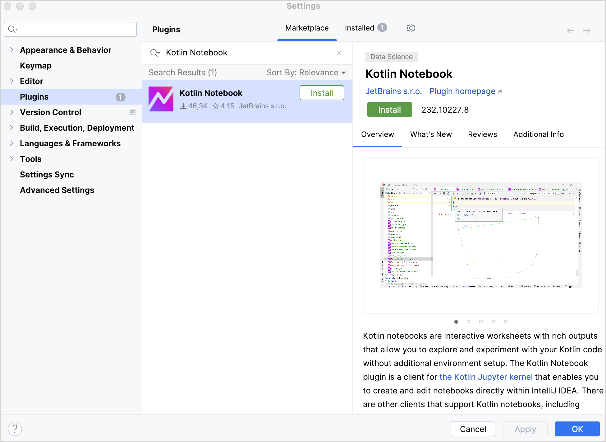

Set up an environment
Before you create your first Kotlin Notebook , you need to set up an environment.
Set up the environment
-
Download and install the latest version of IntelliJ IDEA Ultimate .
-
In IntelliJ IDEA, select IntelliJ IDEA | Settings | Plugins or File | Settings | Plugins .
-
In the Marketplace tab, browse the Kotlin Notebook plugin and install it.
 -
Click OK to apply the changes and restart your IDE if prompted.
Next step
In the next part of the tutorial, you will learn how to create a Kotlin Notebook.
19 April 2025